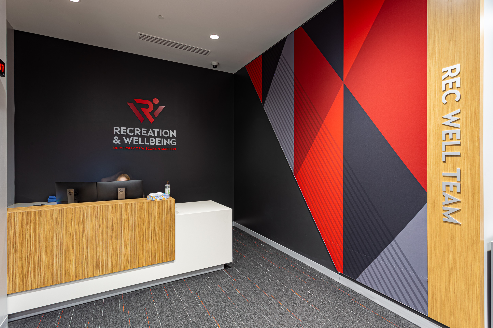

I’m currently pursuing a degree in Communication Arts at UW-Madison.
Experience
As a Communications Assistant at UW RecWell, I create content and support external communications.

Strong Writing Skills: During my time at UW RecWell, I have spent time writng bi-weekly newsletters, blog posts, and articles regarding everything RecWell has to offer.
Team Collaboration: At RecWell, I commonly work alongside the Digital Media team, Graphic Design team, and plenty of other departments.
Media Content Creation: My team and I have produced a variety of photos, videos, and campaigns highlighting all that RecWell has to offer.